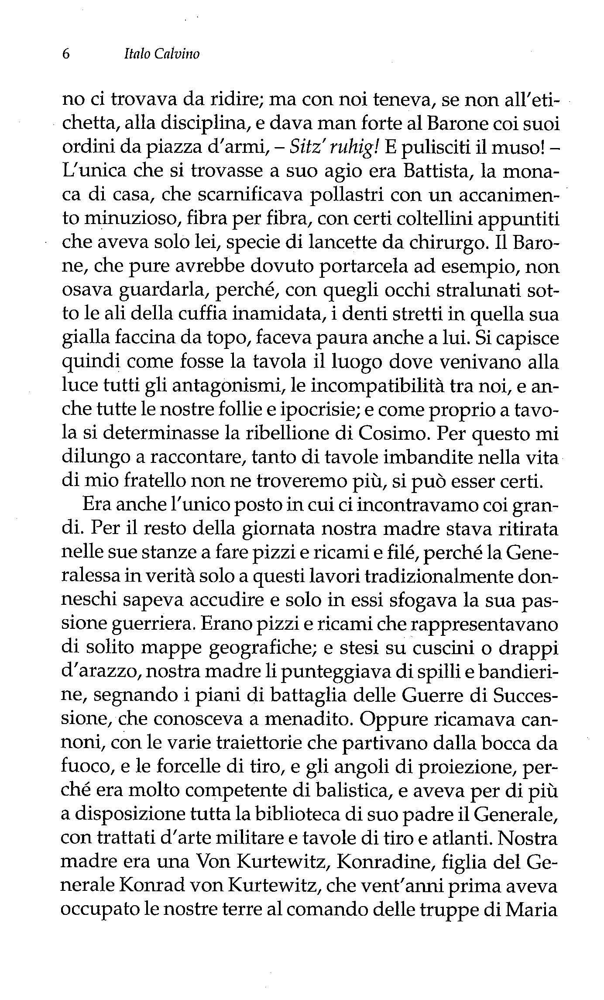
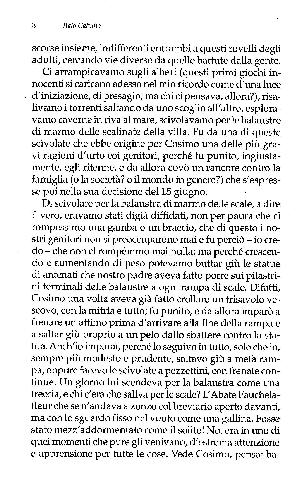
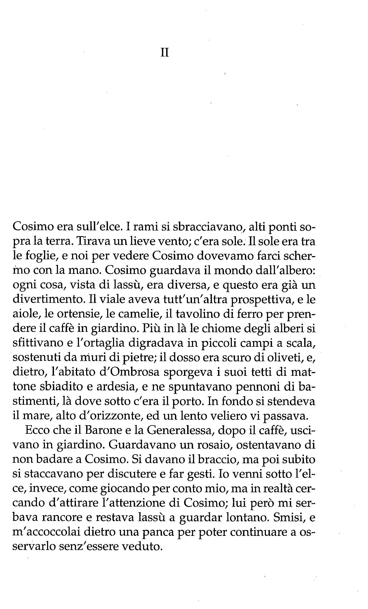

Barone Rampante
Volume
Il romanzo inizia il 15 giugno 1767 data in cui il protagonista, l'adolescente Cosimo Piovasco di Rondò, ha un diverbio familiare dovuto al riufiuto di mangiare un piatto di prelibate lumache preparato dalla sorella. Il litigio sfocia nella fuga del ragazzo sul più maestoso albero del giardino di casa per non scendervi mai più.
Cosimo dimostra ben presto che il suo non è solo un capriccio:spostandosi solo attraverso boschi e foreste e costruendosi a poco a poco una dimensione quotidiana anche sugli alberi.Il ragazzo si dedica allo studio della filosofia, arrivando addirittura a conoscere Voltaire .Il protagonista conosce Viola, una ragazzina di cui si innamora. Nel frattempo soffiano anche i venti della Rivoluzione Francese. Il protagonista arriverà ad incontrare Napoleone Bonaparte rimanendone tuttavia assai deluso.Il romanzo si chiude allora con l'ultimo colpo di scena: anziano e provato dagli anni sugli alberi, Cosimo non si arrende e non scende a terra, rispettando fino all’ultimo la propria promessa. Al passaggio di una mongolfiera, si aggrappa ad un cima penzolante e scompare all'orizzonte.
Lo stile di vita alternativo di Cosimo si traduce col tempo in un percorso di formazione e maturazione che attraverso le varie avventure, che renderà la lettura piacevole ad adulti e bambini.
- Capitolo I
Fu il 15 di giugno del 1767 che Cosimo Piovasco di Rondò, mio fratello, sedette per l’ultima volta in mezzo a noi. Ricordo come fosse oggi. Eravamo nella sala da pranzo della nostra villa d’Ombrosa, le finestre inquadravano i folti rami del grande elce del parco. Era mezzogiorno, e la nostra famiglia per vecchia tradizione sedeva a tavola a quell’ora, nonostante fosse già invalsa tra i nobili la moda, venuta dalla poco mattiniera Corte di Francia, d’andare a desinare a metà del pomeriggio. Tirava vento dal mare, ricordo, e si muovevano le foglie. Cosimo disse: - Ho detto che non voglio e non voglio! - e respinse il piatto di lumache. Mai s’era vista disubbidienza più grave.
A capotavola era il Barone Arminio Piovasco diRondò, nostro padre, con la parrucca lunga sulle orecchie alla Luigi XIV, fuori tempo come tante cose sue. Tra me e mio fratello sedeva l’Abate Fauchelafleur, elemosiniere della nostra famiglia ed aio di noi ragazzi. Di fronte avevamo la Generalessa Corradina di Rondò, nostra madre, e nostra sorella Battista, monaca di casa. All’altro capo della tavola, rimpetto a nostro padre, sedeva, vestito alla turca, il Cavalier Avvocato Enea Silvio Carrega, amministratore e idraulico dei nostri poderi, e nostro zio naturale, in quanto fratello illegittimo di nostro padre.
Pagina 4 - Capitolo I
Da pochi mesi, Cosimo avendo compiuto i dodici anni ed io gli otto, eravamo stati ammessi allo stesso desco dei nostri genitori; ossia, io avevo beneficiato della stessa promozione di mio fratello prima del tempo, perché non vollero lasciarmi di là a mangiare da solo. Dico beneficiato così per dire: in realtà sia per Cosimo che per me era finita la cuccagna, e rimpiangevamo i desinari nella nostra stanzetta, noi due soli con l’Abate Fauchelafleur. L’Abate era un vecchietto secco e grinzoso, che aveva fama di giansenista, ed era difatti fuggito dal Delfìnato, sua terra natale, per scampare a un processo dell’Inquisizione. Ma il carattere rigoroso che di lui solitamente tutti lodavano, la severità interiore che imponeva a sé e agli altri, cedevano continuamente a una sua fondamentale vocazione per l’indifferenza e il lasciar correre, come se le sue lunghe meditazioni a occhi fìssi nel vuoto non avessero approdato che a una gran noia e svogliatezza, e in ogni difficoltà anche minima vedesse il segno d’una fatalità cui non valeva opporsi. I nostri pasti in compagnia dell’Abate cominciavano dopo lunghe orazioni, con movimenti di cucchiai composti, rituali, silenziosi, e guai a chi alzava gli occhi dal piatto o faceva anche il più lieve risucchio sorbendo il brodo; ma alla fine della minestra l’Abate era già stanco, annoiato, guardava nel vuoto, schioccava la lingua a ogni sorso di vino, come se soltanto le sensazioni più superficiali e caduche riuscissero a raggiungerlo; alla pietanza noi già ci potevamo mette-, re a mangiare con le mani, e finivamo il pasto tirandoci torsoli di pera, mentre l’Abate faceva cadere ogni tanto uno dei suoi pigri: - ... Ooo bien!... Ooo alors!
Adesso, invece, stando a tavola con la famiglia, prendevano corpo i rancori familiari, capitolo triste dell’infanzia. Nostro padre, nostra madre sempre lì davanti, l’uso delle posate per il pollo, e sta’ dritto, e via i gomiti dalla tavola, un continuo! e per di più quell’antipatica di nostra sorella
Pagina 5 - Capitolo I
Battista. Cominciò una serie di sgridate, di ripicchi, di castighi, d’im- puntature, fino al giorno in cui Cosimo rifiutò le lumache e decise di separare la sua sorte dalla nostra.
Di quest’accumularsi di risentimenti familiari mi resi conto solo in seguito: allora avevo otto anni, tutto mi pareva un gioco, la guerra di noi ragazzi contro i grandi era la solita di tutti i ragazzi, non capivo che l’ostinazione che ci metteva mio fratello celava qualcosa di più fondo.
Il Barone nostro padre era un uomo noioso, questo è certo, anche se non cattivo: noioso perché la sua vita era dominata da pensieri stonati, come spesso succede nelle epoche di trapasso. L’agitazione dei tempi a molti comunica un bisogno d’agitarsi anche loro, ma tutto all’incontrario, fuori strada: così nostro padre, con quello che bolliva allora in pentola, vantava pretese al titolo di Duca d’Ombrosa, e non pensava ad altro che a genealogie e successioni e rivalità e alleanze con i potentati vicini e lontani
Perciò a casa nostra si viveva sempre come si fosse alle prove generali d’un invito a Corte, non so se quella dell’Imperatrice d’Austria, di Re Luigi, o magari di quei montanari di Torino. Veniva servito un tacchino, e nostro padre a guatarci se lo scalcavamo e spolpavamo secondo tutte le regole reali, e l’Abate quasi non ne assaggiava per non farsi cogliere in fallo, lui che doveva tener bordone a nostro padre nei suoi rimbrotti. Del Cavalier Avvocato Carrega, poi, avevamo scoperto il fondo d’animo falso: faceva sparire cosciotti interi sotto le falde della sua zimarra turca, per poi mangiarseli a morsi come piaceva a lui, nascosto nella vigna; e noi avremmo giurato (sebbene mai fossimo riusciti a coglierlo sul fatto, tanto leste erano le sue mosse) che venisse a tavola con una tasca piena d’ossicini già spolpati, da lasciare nel suo piatto al posto dei quarti di tacchino fatti sparire sani sani. Nostra madre Generalessa non contava, perché usava bruschi modi militari anche nel servirsi a tavola, - So, Noch ein wenig! Gut! - e nessu-
Pagina 6- Capitolo I
no ci trovava da ridire; ma con noi teneva, se non all’etichetta, alla disciplina, e dava man forte al Barone coi suoi ordini da piazza d’armi, - Sitz’ ruhig! E pulisciti il muso! - L’unica che si trovasse a suo agio era Battista, la monaca di casa, che scarnificava pollastri con un accanimento minuzioso, fibra per fibra, con certi coltellini appuntiti che aveva solo lei, specie dilancette da chirurgo. Il Barone, che pure avrebbe dovuto portarcela ad esempio, non osava guardarla, perché, con quegli occhi stralunati sotto le ali della cuffia inamidata, i denti stretti in quella sua gialla faccina da topo, faceva paura anche a lui. Si capisce quindi come fosse la tavola il luogo dove venivano alla luce tutti gli antagonismi, le incompatibilità tra noi, e anche tutte le nostre follie e ipocrisie; e come proprio a tavola si determinasse la ribellione di Cosimo. Per questo mi dilungo a raccontare, tanto di tavole imbandite nella vita di mio fratello non ne troveremo più, si può esser certi.
Era anche l’unico posto in cui ci incontravamo coi grandi. Per il resto della giornata nostra madre stava ritirata nelle sue stanze a fare pizzi e ricami e fìlé, perché la Generalessa in verità solo a questi lavori tradizionalmente donneschi sapeva accudire e solo in essi sfogava la sua passione guerriera. Erano pizzi e ricami che rappresentavano di solito mappe geografìche; e stesi su cuscini o drappi d’arazzo, nostra madre li punteggiava di spilli e bandierine, segnando i piani di battaglia delle Guerre di Successione, che conosceva a menadito. Oppure ricamava cannoni, con le varie traiettorie che partivano dalla bocca da fuoco, e le forcelle di tiro, e gli angoli di proiezione, perché era molto competente di balistica, e aveva per di più a disposizione tutta la biblioteca di suo padre il Generale, con trattati d’arte militare e tavole di tiro e atlanti. Nostra madre era una VonKurtewitz, Konradine, figlia del Generale Konrad VonKurtewitz, che vent’anni prima aveva occupato le nostre terre al comando delle truppe di Maria
Pagina 7 - Capitolo I
Teresa d’Austria. Orfana di madre, il Generale se la portava dietro al campo; niente di romanzesco, viaggiavano ben equipaggiati, alloggiati nei castelli migliori, con uno stuolo di serve, e lei passava le giornate facendo pizzi al tombolo; quello che si racconta, che andasse in battaglia anche lei, a cavallo, sono tutte leggende; era sempre stata una donnetta con la pelle rosata e il naso in su come ce la ricordiamo noi, ma le era rimasta quella paterna passione militare, forse per protesta contro suo marito.
Nostro padre era tra i pochi nobili delle nostre parti che si fossero schierati con gli Imperiali in quella guerra: aveva accolto a braccia aperte il Generale VonKurtewitz nel suo feudo, gli aveva messo a disposizione i suoi uomini, e per meglio dimostrare la sua dedizione alla causa imperiale aveva sposato Konradine, tutto sempre nella speranza del Ducato, e gli andò male anche allora, come al solito, perché gli Imperiali sloggiarono presto e i Genovesi lo caricarono di tasse. Però ci aveva guadagnato una brava sposa, la Generalessa, come venne chiamata dopo che il padre morì nella spedizione di Provenza, e Maria Teresa le mandò un collare d’oro su un cuscino di damasco; una sposa con cui egli andò quasi sempre d’accordo, anche se lei, allevata negli accampamenti, non sognava che eserciti e battaglie e lo rimproverava di non essere altro che un maneggione sfortunato.
Ma in fondo erano tutt’e due rimasti ai tempi delle Guerre di Successione, lei con le artiglierie per la testa, lui con gli alberi genealogici; lei che sognava per noi figlioli un grado in un esercito non importa quale, lui che ci vedeva invece sposati a qualche Granduchessa elettrice dell’Impero... Con tutto questo, furono degli ottimi genitori, ma talmente distratti che noi due potemmo venir su quasi abbandonati a noi stessi. Fu un male o un bene? E chi può dirlo? La vita di Cosimo fu tanto fuori del comune, la mia così regolata e modesta, eppure la nostra fanciullezza tra-
Pagina 8 - Capitolo I
scorse insieme, indifferenti entrambi a questi rovelli degli adulti, cercando vie diverse da quelle battute dalla gente.
Ci arrampicavamo sugli alberi (questi primi giochi innocenti si caricano adesso nel mio ricordo come d’una luce d’iniziazione, di presagio; ma chi ci pensava, allora?), risalivamo i torrenti saltando da uno scoglio all’altro, esploravamo caverne in riva al mare, scivolavamo per le balaustre di marmo delle scalinate della villa. Fu da una di queste scivolate che ebbe origine per Cosimo una delle più gravi ragioni d’urto coi genitori, perché fu punito, ingiustamente, egli ritenne, e da allora covò un rancore contro la famiglia (o la società? o il mondo in genere?) che s’espresse poi nella sua decisione del 15 giugno.
Di scivolare per la balaustra di marmo delle scale, a dire il vero, eravamo stati digià diffidati, non per paura che ci rompessimo una gamba o un braccio, che di questo i nostri genitori non si preoccu- parono mai e fu perciò - io credo che non ci rompemmo mai nulla; ma perché crescendo e aumentando di peso potevamo buttar giù le statue di antenati che nostro padre aveva fatto porre sui pila- strini terminali delle balaustre a ogni rampa di scale. Difatti, Cosimo una volta aveva già fatto crollare un trisavolo vescovo, con la mitria e tutto; fu punito, e da allora imparò a frenare un attimo prima d’arrivare alla fine della rampa e a saltar giù proprio a un pelo dallo sbattere contro la statua. Anch’io imparai, perché lo seguivo in tutto, solo che io, sempre più modesto e prudente, saltavo giù a metà rampa, oppure facevo le scivolate a pezzettini, con frenate continue. Un giorno lui scendeva per la balaustra come una freccia, e chi c’era che saliva per le scale! L’Abate Fauchelafleur che se n’andava a zonzo col breviario aperto davanti, ma con lo sguardo fisso nel vuoto come una gallina. Fosse stato mezz’addormentato come il solito! No, era in uno di quei momenti che pure gli venivano, d’estrema attenzione e apprensione per tutte le cose. Vede Cosimo, pensa: ba-
Pagina 9 - Capitolo I
laustra, statua, ora ci sbatte, ora sgridano anche me (perché ad ogni monelleria nostra veniva sgridato anche lui che non sapeva sorvegliarci) e si butta sulla balaustra a trattenere mio fratello. Cosimo sbatte contro l’Abate, lo travolge giù per la balaustra (era un vecchiettino pelle e ossa), non può frenare, cozza con raddoppiato slancio contro la statua del nostro antenato Cacciaguerra Piovasco crociato in Terrasanta, e diroccano tutti a piè delle scale: il crociato in frantumi (era di gesso), l’Abate e lui. Furono ramanzine a non finire, frustate, pensi, reclusione a pane e minestrone freddo. E Cosimo, che si sentiva innocente perché la colpa non era stata sua ma dell’Abate, uscì in quell’invettiva feroce: Io me n’infischio di tutti i vostri antenati, signor padre! - che già annunciava la sua vocazione di ribelle.
Nostra sorella lo stesso, in fondo. Anche lei, se pure l’isolamento in cui viveva le era stato imposto da nostro padre, dopo la storia del Marchesino del- la Mela, era sempre stata un animo ribelle e solitario. Come fosse andata quella volta del Marchesino, non si seppe mai bene. Figlio d’una famiglia a noi ostile, come s’era intrufolato in casa? E perché? Per sedurre, anzi, per violentare nostra sorella, si disse nella lunga lite che ne seguì tra le famiglie. Di fatto, quel bietolone lentigginoso non riuscimmo mai a immaginarcelo come un seduttore, e meno che mai con nostra sorella, certo più forte di lui, e famosa per fare a braccio di ferro anche con gli stallieri. E poi: perché fu lui a gridare? E come mai fu trovato, dai servi accorsi insieme a nostro padre, con i calzoni a brandelli, lacerati come dagli artigli d’una tigre? I Della Mela mai vollero ammettere che loro figlio avesse attentato all’onore di Battista e consentire al matrimonio. Così nostra sorella finì sepolta in casa, con gli abiti da monaca, pur senz’aver pronunciato voti neppure di terziaria, data la sua dubbia vocazione.
Il suo animo tristo s’esplicava soprattutto nella cucina. Era bravissima nel cucinare, perché non le mancava né
Pagina 10 - Capitolo I
la diligenza né la fantasia, doti prime d’ogni cuoca, ma dove metteva le mani lei non si sapeva che sorprese mai potessero arrivarci in tavola: certi crostini di paté, aveva preparato una volta, fìnissimi a dire il vero, di fegato di topo, e non ce l’aveva detto che quando li avevamo mangiati e trovati buoni; per non dire delle zampe di cavalletta, quelle di dietro, dure e seghettate, mes-se a mosaico su una torta; e i codini di porco arrostiti come fossero ciambelle; e quella volta che fece cuocere un porcospino intero, con tutte le spine, chissà perché, certo solo per farci impressione quando si sollevò il coprivivande, perché neanche lei, che pure mangiava sempre ogni razza di roba che avesse preparato, lo volle assaggiare, ancorché fosse un porcospino cucciolo, rosa, certo tenero. Infatti, molta di questa sua orrenda cucina era studiata solo per la figura, più che per il piacere di farci gustare insieme a lei cibi dai sapori raccapriccianti. Erano, questi piatti di Battista, delle opere di finissima oraferia animale o vegetale: teste di cavolfiore con orecchie di lepre poste su un colletto di pelo di lepre; o una testa di porco dalla cui bocca usciva, come cacciasse fuori la lingua, un’aragosta rossa, e l’aragosta nelle pinze teneva la lingua del maiale come se glie l’avesse strappata. Poi le lumache: era riuscita a decapitare non so quante lumache, e le teste, quelle teste di cavallucci molli molli, le aveva infisse, credo con uno stecchino, ognuna su un bignè, e parevano, come vennero in tavola, uno stormo di piccolissimi cigni. E ancor più della vista di quei manicaretti faceva impressione pensare dello zelante accanimento che certo Battista v’aveva messo a prepararli, immaginare le sue mani sottili mentre smembravano quei corpicini d’animali.
Il modo in cui le lumache eccitavano la macabra fantasia di nostra sorella, ci spinse, mio fratello e me, a una ribellione, che era insieme di solidarietà con le povere bestie straziate, di disgusto per il sapore delle lumache cotte e d’in-
Pagina 11 - Capitolo I
sofferenza per tutto e per tutti, tanto che non c’è da stupirsi se di lì Cosimo maturò il suo gesto e quel che ne seguì.
Avevamo architettato un piano. Come il Cavalier Avvocato portava a casa un canestro pieno di lumache mangerecce, queste erano messe in cantina in un barile, perché stessero in digiuno, mangiando solo crusca, e si purgassero. A spostare la copertura di tavole di questo barile appariva una specie d’inferno, in cui le lumache si muovevano su per le doghe con una lentezza che era già un presagio d’agonia, tra rimasugli di crusca, strie d’opaca bava aggrumata e lumacheschi escrementi colorati, memoria del bel tempo dell’aria aperta e delle erbe. Quale di loro era tutta fuori del guscio, a capo proteso e corna divaricate, quale tutta rattrappita in sé, sporgendo solo diffidenti antenne; altre a crocchio come comari, altre addormentate e chiuse, altre morte con la chiocciola riversa. Per salvarle dall’incontro con quella sinistra cuoca, e per salvare noi dalle sue imbandigioni, praticammo un foro nel fondo del barile, e di lì tracciammo, con fili d’erba tritata e miele, una strada il più possibile nascosta, dietro botti e attrezzi della cantina, per attrarre le lumache sulla via della fuga, fino a una finestrella che dava in un’aiola incolta e sterposa.
Il giorno dopo, quando scendemmo in cantina a controllare gli effetti del nostro piano, e a lume di candela ispezionammo i muri e gli anditi, - Una qui!... E un’altra qua! - ... E vedi questa dov’è arrivata! - già una fila di lumache a non lunghi intervalli percorreva dal barile alla finestrella il pavimento e i muri, seguendo la nostra traccia. - Pre- sto, lumachine! Fate presto, scappate! - non potemmo trattenerci dal dir loro, vedendo le bestiole andare lemme lemme, non senza deviare in giri oziosi sulle ruvide pareti della cantina, attratte da occasionali depositi e muffe e ingrommature; ma la cantina era buia, ingombra, accidentata: speravamo che nessuno potesse scoprirle, che avessero il tempo di scappare tutte.
Pagina 12- Capitolo I
Invece, quell’anima senza pace di nostra sorella Battista percorreva la notte tutta la casa a caccia di topi, reggendo un candeliere, e con lo schioppo sotto il braccio. Passò in cantina, quella notte, e la luce del candeliere illuminò una lumaca sbandata sul soffitto, con la scia di bava argentea. Risuonò una fucilata. Tutti nei letti sobbalzammo, ma subito riaffondammo il capo nei guanciali, avvezzi com’eravamo alle cacce notturne della monaca di casa. Ma Battista, distrutta la lumaca e fatto crollare un pezzo d’intonaco con quella schioppettata irragionevole, cominciò a gridare con la sua vocetta stridula:- Aiuto! Scappano tutte! Aiuto! - Accorsero i servi mezzo spogliati, nostro padre armato d’una sciabola, l’Abate senza parrucca, e il Cavalier Avvocato, prim’ancora di capir nulla, per paura di seccature scappò nei campi e andò a dormire in un pagliaio.
Al chiaror delle torce tutti si misero a dar la caccia alle lumache per la cantina, sebbene a nessuno stessero a cuore, ma ormai erano svegliati e non volevano, per il solito amor proprio, ammettere d’esser stati disturbati per nulla. Scoprirono il buco nel barile e capirono subito che eravamo stati noi. Nostro padre ci venne ad agguantare in letto, con la frusta del cocchiere. Finimmo ricoperti di striature viola sulla schiena le natiche e le gambe, chiusi nello stanzino squallido che ci faceva da prigione.
Ci tennero lì tre giorni, a pane acqua insalata cotenne di bue e minestrone freddo (che, fortunatamente, ci piaceva). Poi, primo pasto in famiglia, come niente fosse stato, tutti a puntino, quel mezzogiorno del 15 giugno: e cos’aveva preparato nostra sorella Battista, sovrintendente alla cucina? Zuppa di lumache e pietanza di lumache. Cosimo non volle toccare neanche un guscio. - Mangiate o subito vi rinchiudiamo nello stanzino! - Io cedetti, e cominciai a trangugiare quei molluschi. (Fu un po’ una viltà, da parte mia, e fece sì che mio fratello si sentisse più solo, cosicché nel suo lasciarci c’era anche una protesta contro di
Pagina 13 - Capitolo I
me, che l’avevo deluso; ma avevo solo otto anni, e poi a che vale paragonare la mia forza di volontà, anzi, quella che po- tevo avere da bambino, con l’ostinazione sovrumana che contrassegnò la vita di mio fratello?)
- E allora? - disse nostro padre a Cosimo.
- No, e poi no! - fece Cosimo, e respinse il piatto.
- Via da questa tavola!
Ma già Cosimo aveva voltato le spalle a tutti noi e stava uscendodalla sala.
- Dove vai?
Lo vedevamo dalla porta a vetri mentre nel vestibolo prendeva il suo tricorno e il suo spadino.
- Lo so io! - Corse in giardino.
Di lì a poco, dalle finestre, lo vedemmo che s’arrampicava su per l’elce. Era vestito e acconciato con grande proprietà, come nostro padre voleva venisse a tavola, nonostante i suoi dodici anni: capelli incipriati col nastro al codino, tricorno, cravatta di pizzo, marsina verde a code, calzonetti color malva, spadino, e lunghe ghette di pelle bianca a mezza coscia, unica concessione a un modo di vestirsi più intonato alla nostra vita campagnola. (Io, avendo solo otto anni, ero esentato dalla cipria sui capelli, se non nelle occasioni di gala, e dallo spadino, che pure mi sarebbe piaciuto portare). Così egli saliva per il nodoso albero, muovendo braccia e gambe per i rami con la sicurezza e la rapidità che gli venivano dalla lunga pratica fatta insieme.
Ho già detto che sugli alberi noi trascorrevamo ore e ore, e non per motivi utilitari come fanno tanti ragazzi, che ci salgono solo per cercar frutta o nidi d’uccelli, ma per il piacere di superare difficili bugne del tronco e inforcature, e arrivare più in alto che si poteva, e trovare bei posti dove fermarci a guardare il mondo laggiù, a fare scherzi e voci a chi passava sotto. Trovai quindi naturale che il primo pensiero di Cosimo, a quell’ingiusto accanirsi contro di lui, fosse stato d’arrampicarsi sull’elce, albero a noi
Pagina 14 - Capitolo I
familiare, e che protendendo i rami all’altezza delle finestre della sala, imponeva il suo contegno sdegnoso e offeso alla vista di tutta la famiglia.
- Vorsicht! Vorsicht! Ora casca, poverino! - esclamò piena d’ansia nostra madre, che ci avrebbe visto volentieri alla carica sotto le cannonate, ma intanto stava in pena per ogni nostro gioco Cosimo salì fino alla forcella d’un grosso ramo dove poteva stare comodo, e si sedette lì, a gambe penzoloni, a braccia incrociate con le mani sotto le ascelle, la testa insaccata nelle spalle, il tricorno calcato sulla fronte. Nostro padre si sporse dal davanzale. - Quando sarai stanco di star lì cambierai idea! - gli gridò. - Non cambierò mai idea, - fece mio fratello, dal ramo. - Ti farò vedere io, appena scendi! - E io non scenderò più! - E mantenne la parola.
Capitolo II
Cosimo era sull’elce. I rami si sbracciavano, alti ponti sopra la terra. Tirava un lieve vento; c’era sole. Il sole era tra le foglie, e noi per vedere Cosimo dovevamo farci schermo con la mano. Cosimo guardava il mondo dall’albero: ogni cosa, vista di lassù, era diversa, e questo era già un divertimento. Il viale aveva tutt’un’altra prospettiva, e le aiole, le ortensie, le camelie, il tavolino di ferro per prendere il caffè in giardino. Più in là le chiome degli alberi si sfìttivano e l’ortaglia digradava in piccoli campi a scala, sostenuti da muri di pietre; il dosso era scuro di oliveti, e, dietro, l’abitato d’Ombrosa sporgeva i suoi tetti di mattone sbiadito e ardesia, e ne spuntavano pennoni di bastimenti, là dove sotto c’era il porto. In fondo si stendeva il mare, alto d’orizzonte, ed un lento veliero vi passava.
Ecco che il Barone e la Generalessa, dopo il caffè, uscivano in giardino. Guardavano un rosaio, ostentavano di non badare a Cosimo. Si davano il braccio, ma poi subito si staccavano per discutere e far gesti. Io venni sotto l’elce, invece, come giocando per conto mio, ma in realtà cercando d’attirare l’attenzione di Cosimo; lui però mi serbava rancore e restava lassù a guardar lontano. Smisi, e m’ac- coccolai dietro una panca per poter continuare a osservarlo senz’essere veduto.
Pagina 16 - Capitolo II
Mio fratello stava come di vedetta. Guardava tutto, e tutto era come niente. Tra i limoneti passava una donna con un cesto. Saliva un mulattiere per la china, reggendosi alla coda della mula. Non si videro tra loro; la donna, al rumore degli zoccoli ferrati, si voltò e si sporse verso strada, ma non fece in tempo. Si mise a cantare allora, ma il mulattiere passava già la svolta, tese l’orecchio, schioccò la frusta e alla mula disse: - Aah! - E tutto finì lì. Cosimo vedeva questo e quello.
Per il viale passò l’Abate Fauchelafleur col breviario aperto. Cosimo prese un qualcosa dal ramo e glielo lasciò cadere in testa; non capii cos’era, forse un ragnetto, o una scheggia di scorza; non lo prese. Con lo spadino Cosimo si mise a frugare in un buco del tronco. Ne uscì una vespa arrabbiata, lui la cacciò via sventolando il tricorno e ne seguì il volo con lo sguardo fino ad una pianta di zucche, dove s’ac- quattò. Veloce come sempre, il Cavalier Avvocato uscì di casa, prese per le scalette del giardino e si perse tra i filari della vigna; Cosimo, per vedere dove andava, s’arrampicò su un altro ramo. Lì, di tra il fogliame, s’udì un frullo, e s’alzò a volo un merlo. Cosimo ci restò male perché era stato lassù tutto quel tempo e non se n’era accorto. Stette a guardare controsole se ce n’erano degli altri. No, non ce n’erano.
L’elce era vicino a un olmo; le due chiome quasi si toccavano. Un ramo dell’olmo passava mezzo metro sopra a un ramo dell’altro albero; fu facile a mio fratello fare il passo e così conquistare la som- mità dell’olmo, che non avevamo mai esplorato, per esser alto di palco e poco arrampicabile da terra. Dall’olmo, sempre cercando dove un ramo passava gomito a gomito con i rami d’un’altra pianta, si passava su un carrubo, e poi su un gelso. Così vedevo Cosimo avanzare da un ramo all’altro, camminando sospeso sul giardino.
Certi rami del grande gelso raggiungevano e scavalcavano il muro di cinta della nostra villa, e di là c’era il giardino dei d’Ondariva. Noi, benché confinanti, non sapeva-
Pagina 17 - Capitolo II

mo nulla dei Marchesi d’Ondariva e Nobili d’Ombrosa, perché godendo essi da parecchie generazioni di certi diritti feudali su cui nostro padre vantava pretese, un astio reciproco divideva le due famiglie, così come un muro alto che pareva un mastio di fortezza divideva le nostre ville, non so se fatto erigere da nostro padre o dal Marchese. S’aggiunga a ciò la gelosia di cui gli Ondariva circondavano il loro giardino, popolato, a quanto si diceva, di specie di piante mai vedute. Infatti, digià il padre degli attuali Marchesi, discepolo di Linneo, aveva mosso tutte le vaste parentele che la famiglia contava alle Corti di Francia e d’Inghilterra, per farsi mandare le più preziose rarità botaniche delle colonie, e per anni i bastimenti avevano sbarcato a Ombrosa sacchi di semi, fasci di talee, arbusti in vaso, e perfino alberi interi, con enormi involti di pan di terra attorno alle radici; finché in quel giardino era cresciuta - dicevano - una mescolanza di foreste delle Indie e delle Americhe, se non addirittura della Nuova Olanda.
Tutto quel che ne potevamo vedere noi era l’affacciarsi all’orlo del muro delle foglie oscure d’una pianta nuovamente importata dalle colonie americane, la magnolia, che sui rami neri sporgeva un carnoso fiore bianco. Dal nostro gelso Cosimo fu sulla cornice del muro, fece qualche passo in equilibrio, e poi, tenendosi con le mani, si calò dall’altra parte, dov’erano le foglie e il fiore di magnolia. Di lì scom- parve alla mia vista; e quello che ora dirò, come molte delle cose di questo racconto della sua vita, mi furono riferite da lui in seguito, oppure fui io a ricavarle da sparse testimonianze ed induzioni Cosimo era sulla magnolia. Benché fitta di rami questa pianta era ben praticabile a un ragazzo esperto di tutte le specie d’alberi come mio fratello; e i rami resistevano al peso, ancorché non molto grossi e d’un legno dolce che la punta delle scarpe di Cosimo sbucciava, aprendo bianche ferite nel nero della scorza; ed avvolgeva il ragazzo in un
Pagina 18 - Capitolo II
profumo fresco di foglie, come il vento le muoveva, voltandone le pagine in un verdeggiare ora opaco ora brillante.
Ma era tutto il giardino che odorava, e se Cosimo ancora non riusciva a percorrerlo con la vista, tanto era irregolarmente folto, già lo esplorava con l’olfatto, e cercava di discernerne i vari aromi, che pur gli erano noti da quando, portati dal vento, giungevano fin nel nostro giardino e ci parevano una cosa sola col segreto di quella villa. Poi guardava le fronde e vedeva foglie nuove, quali grandi e lustre co- me ci corresse sopra un velo d’acqua, quali minuscole e pennate, e tronchi tutti lisci o tutti scaglie.
C’era un gran silenzio. Solo un volo si levò di piccolissimi luì, gridando. E si sentì una vocetta che cantava: - Oh là là là! La ba-la-nçoire... - Cosimo guardò giù. Appesa al ramo d’un grande albero vi- cino dondolava un’altalena, con seduta una bambina sui dieci anni.
Era una bambina bionda, con un’alta pettinatura un po’ buffa per una bimba, un vestito azzurro anche quello troppo da grande, la gonna che ora, sollevata sull’altalena, traboccava di trine. La bambina guardava a occhi socchiusi e naso in su, come per un suo vezzo di far la dama, e mangiava una mela a morsi, piegando il capo ogni volta verso la mano che doveva insieme reggere la mela e reggersi alla fune dell’altalena, e si dava spinte colpendo con la punta degli scarpini il terreno ogni volta che l’altalena era al punto più basso del suo arco, e soffiava via dalle labbra i frammenti di buccia di mela morsicata, e cantava: - Oh là là là! La ba-la-nçoire... - come una ragazzina che ormai non le importa più nulla né dell’altalena, né della canzone, né(ma pure un po’ di più) della mela, e ha già altri pensieri per il capo.
Cosimo, d’in cima alla magnolia, era calato fino al palco più basso, ed ora stava coi piedi piantati uno qua uno là in due forcelle e i gomiti appoggiati a un ramo davanti a lui come a un davanzale. I voli dell’altalena gli portavano la bambina proprio sotto il naso.
Pagina 19 - Capitolo II
Lei non stava attenta e non se n’era accorta. Tutt’a un tratto se lo vide lì, ritto sull’albero, in tricorno e ghette. - Oh! - disse.
La mela le cadde di mano e rotolò al piede della magnolia. Cosimo sguainò lo spadino, s’abbassò giù dall’ultimo ramo, raggiunse la mela con la punta dello spadino, la infilzò e la porse alla bambina che nel frattempo aveva fatto un percorso completo d’altalena ed era di nuovo lì. - La prenda, non s’è sporcata, è solo un po’ ammaccata da una parte.
La bambina bionda s’era già pentita d’aver mostrato tanto stupore per quel ragazzetto sconosciuto apparso lì sulla magnolia, e aveva ripreso la sua aria sussiegosa a naso in su. - Siete un ladro? - disse.
- Un ladro? - fece Cosimo, offeso; poi ci pensò su: lì per lì l’idea gli piacque. - Io sì, - disse, calcandosi il tricorno sulla fronte. - Qualcosa in contrario?
- E cosa siete venuto a rubare?
Cosimo guardò la mela che aveva infilzato sulla punta dello spadino, e gli venne in mente che aveva fame, che non aveva quasi toccato cibo in tavola. - Questa mela, - disse, e prese a sbucciarla con la lama dello spadino, che teneva, a dispetto dei divieti familiari, affilatissima.
- Allora siete un ladro di frutta, - disse la ragazza.
Mio fratello pensò alle masnade dei ragazzi poveri d’Ombrosa, che scavalcavano i muri e le siepi e saccheggiavano i frutteti, una genìa di ragazzi che gli era stato insegnato di disprezzare e di sfuggire, e per la prima volta pensò a quanto doveva essere libera e invidiabile quella vita. Ecco: forse poteva diventare uno come loro, e vivere così, d’ora in avanti. - Sì, - disse. Aveva tagliato a spicchi la mela e si mise a masticarla.
La ragazzina bionda scoppiò in una risata che durò tutto un volo d’altalena, su e giù. - Ma va’! I ragazzi che rubano la frutta io li conosco! Sono tutti miei amici! E quel-
Pagina 20 - Capitolo II
li vanno scalzi, in maniche di camicia, spettinati, non con le ghette e il parrucchino!
Mio fratello diventò rosso come la buccia della mela. L’esser preso 86 in giro non solo per l’incipriatura, cui non teneva affatto, ma anche per le ghette, cui teneva moltissimo, e l’esser giudicato d’aspetto inferiore a un ladro di frutta, a quella genìa fino a un momento prima disprezzata, e soprattutto lo scoprire che quella damigella che faceva da padrona nel giardino dei d’Ondariva era amica di tutti i ladri di frutta ma non amica sua, tutte queste cose insieme lo riempirono di dispetto, vergogna e gelosia.
- Oh là là là... Con le ghette e il parrucchin! - canterellava la bambina sull’altalena.
A lui prese un ripicco d’orgoglio. -Non sono un ladro di quelli che conoscete voi! - gridò. - Non sono affatto un ladro! Dicevo così per non spaventarvi: perché se sapeste chi sono io sul serio, morireste di paura: sono un brigante! Un terribile brigante!
La ragazzina continuava a volargli fin sul naso, si sarebbe detto volesse arrivare a sfiorarlo con le punte dei piedi. - Ma va’! E dov’è lo schioppo? I briganti hanno tutti lo schioppo! O la spingarda! Io li ho visti! A noi ci hanno fermato cinque volte la carrozza, nei viaggi dal castello a qua!
- Ma il capo no! Io sono il capo! Il capo dei briganti non ha lo 87 schioppo! Ha solo la spada! - e protese il suo spadino.
La ragazzina si strinse nelle spalle. II capo dei briganti, - spiegò, - è uno che si chiama Gian dei Brughi e viene sempre a portarci dei regali, a Natale e a Pasqua!
- Ah! - esclamò Cosimo di Rondò, raggiunto da un’ondata di faziosità familiare. - Allora ha ragione mio padre, quando dice che il Marchese d’Ondariva è il protettore di tutto il brigantaggio e il contrabbando della zona!
La bambina passò vicino a terra, invece di darsi la spinta frenò con un rapido sgambettio, e saltò giù. L’altalena vuota sobbalzò in aria sulle corde. - Scendete subito di lassù-
Pagina 21 - Capitolo II
Come vi siete permesso d’entrare nel nostro terreno! - fece, puntando un indice contro il ragazzo, incattivita. - Non sono entrato e non scenderò, - disse Cosimo con pari calore. -Sul vostro terreno non ho mai messo piede, e non ce lo metterei per tutto l’oro del mondo! . La ragazzina allora, con gran calma, prese un ventaglio che era posato su una poltrona di vimini, e sebbene non facesse molto caldo, si sventolò passeggiando avanti e indietro. - Adesso, - fece con tutta calma, - chiamerò i servi e vi farò prendere e bastonare. Così imparerete a intrufolarvi nel nostro terreno! Cambiava sempre tono, questa bambina, e mio fratello tutte le volte restava stonato. - Dove son io non è terreno e non è vostro! - proclamò Cosimo, e già gli veniva la tentazione di aggiungere: «E poi io sono il Duca d’Ombrosa e sono il signore di tutto il territorio!» ma si trattenne, perché non gli piaceva di ripetere le cose che diceva sempre suo padre, adesso che era scappato via da tavola in lite con lui; non gli piaceva e non gli pareva giusto, anche perché quelle pretese sul Ducato gli erano sempre parse fissazioni; che c’entrava che ci si mettesse anche lui Cosimo, ora, a millantarsi Duca? Ma non voleva smentirsi e continuò il discorso come gli veniva. - Qui non è vostro, - ripetè, - perché vostro è il suolo, e se ci posassi un piede allora sarei uno che s’intrufola. Ma quassù no, e io vado dappertutto dove mi pare. - Sì, allora è tuo, lassù... - Certo! Territorio mio personale, tutto quassù, - e fece un vago gesto verso i rami, le foglie controsole, il cielo. - Sui rami degli alberi è tutto mio territorio. Di’ che vengano a prendermi, se ci riescono! Adesso, dopo tante rodomontate, s’aspettava che lei lo prendesse in giro chissà come. Invece si mostrò imprevedibilmente interessata. - Ah sì? E fin dove arriva, questo tuo territorio? - Tutto fin dove si riesce ad arrivare andando sopra gli alberi, di qua, di là, oltre il muro, nell’oliveto, fin sulla collina, dall’altra parte della collina, nel bosco, nelle terre del Vescovo..
Pagina 22 - Capitolo II
- Anche fino in Francia
- Fino in Polonia e in Sassonia, - disse Cosimo, che di geografia sapeva solo i nomi sentiti da nostra madre quando parlava delle Guerre di Successione. - Ma io non sono egoista come te. Io nel mio territorio ti ci invito -. Ormai erano passati a darsi del tu tutt’e due, ma era lei che aveva cominciato.
- E l’altalena di chi è? - disse lei, e ci si sedette, col ventaglio aperto in mano.
- L’altalena è tua, - stabilì Cosimo, - ma siccome è legata a questo ramo, dipende sempre da me. Quindi, se tu ci stai mentre tocchi terra coi piedi, stai nel tuo, se ti sollevi per aria sei nel mio.
Lei si dette la spinta e volò, le mani strette alle funi. Cosimo dalla magnolia saltò sul grosso ramo che reggeva l’altalena, e di là afferrò le funi e si mise lui a farla dondolare. L’altalena andava sempre più in su.
- Hai paura?
- Io no. Come ti chiami?
- Io Cosimo... E tu?
- Violante ma mi dicono Viola.
- A me mi chiamano Mino, anche, perché Cosimo è un nome da vecchi.
- Non mi piace.
- Cosimo?
- No, Mino.
- Ah... Puoi chiamarmi Cosimo.
Neanche per idea! Senti, tu, dobbiamo fare patti chiari. - Come dici? - fece lui, che continuava a restarci male ogni volta.
- Dico: io posso salire nel tuo territorio e sono un’ospite sacra, va bene? Entro ed esco quando voglio. Tu invece
Pagina 23 - Capitolo II
sei sacro e inviolabile finché sei sugli alberi, nel tuo territorio, ma appena tocchi il suolo del mio giardino diventi mio schiavo e vieni incatenato.
- No, io non scendo nel tuo giardino e nemmeno nel mio. Per me è tutto territorio nemico ugualmente. Tu verrai su con me, e verranno i tuoi amici che rubano la frutta, forse anche mio fratello Biagio, sebbene sia un po’ vigliacco, e faremo un esercito tutto sugli alberi e ridurremo alla ragione la terra e i suoi abitanti.
- No, no, niente di tutto questo. Lascia che ti spieghi come stanno le cose. Tu hai la signoria degli alberi, va bene?, ma se tocchi una volta terra con un piede, perdi tutto il tuo regno e resti l’ultimo degli schiavi. Hai capito? Anche se ti si spezza un ramo e caschi, tutto perduto!
- Io non sono mai caduto da un albero in vita mia!
- Certo, ma se caschi, se caschi diventi cenere e il ven- to ti porta via.
- Tutte storie. Io non vado a terra perché non voglio.
Oh, come sei noioso.
- No, no, giochiamo. Per esempio, sull'altalena potrei starci?
-Se ti riuscisse di sederti sull'altalena senza toccar terra, sì.
Vicino all'altalena di Viola ce n'era un'altra, appesa allo stesso ramo, ma tirata su con un nodo alle funi perché non s'urtassero. Cosimo dal ramo si lasciò scendere giù aggrap- pato a una delle funi, esercizio in cui era molto bravo per- ché nostra madre ci faceva fare molte prove di palestra, ar- rivò al nodo, lo sciolse, si pose in piedi sull'altalena e per darsi lo slancio spostò il peso del corpo piegandosi sul- le ginocchia e scattando avanti. Così si spingeva sempre più in su. Le due altalene andavano una in un senso una nell'altro e ormai arrivavano alla stessa altezza, e si pas- savano vicino a metà percorso.
Ma se tu provi a sederti e a darti una spinta coi piedi, vai più in alto, insinuò Viola.
Pagina 24 - Capitolo II
Cosimo le fece uno sberleffo.
- Vieni giù a darmi una spinta, sii bravo, - fece lei, sorridendogli, gentile.
- ma io, s’era detto che non devo scendere a nessun costo... - e Cosimo ricominciava a non capire.
- Sii gentile.
- No.
- Ah, ah! Stavi già per cascarci. Se mettevi un piede per terra avevi già perso tutto! - Viola scese dall’altalena e prese a dare delle leggere spinte all’altalena di Cosimo. - Uh! - Aveva afferrato tutt’a un tratto il sedile dell’altalena su cui mio fratello teneva i piedi e l’aveva rovesciato. Fortuna che Cosimo si teneva ben saldo alle corde! Altrimenti sarebbe piombato a terra come un salame!
- Traditrice! - gridò, e s’arrampicò su, stringendosi alle due corde, ma la salita era molto più difficile della discesa, soprattutto con la bambina bionda che era in uno dei suoi momenti maligni e tirava le corde da giù in tutti i sensi.
Finalmente raggiunse il grosso ramo, e ci si mise a cavalcioni. Con la cravatta di pizzo s’asciugò il sudore dal viso. - Ah! ah! Non ce l’hai fatta!
- Per un pelo!
- Ma io ti credevo mia amica!
- Credevi! - e riprese a sventagliarsi.
- Violante! - proruppe in quel momento un’acuta voce femminile. Con chi stai parlando?
Sulla scalinata bianca che portava alla villa era apparsa una signora: alta, magra, con una larghissima gonna; guardava con l’occhialino. Cosimo si ritrasse tra le foglie, intimidito.
- Con un giovane, ma tante, - disse la bambina, - che è nato in cima a un albero e per incantesimo non può metter piede a terra.
Cosimo, tutto rosso, domandandosi se la bambina parlava così per prenderlo in giro davanti alla zia, o per prendere in
Pagina 25 - Capitolo II
giro la zia davanti a lui, o solo per continuare il gioco, o perché non le importava nulla né di lui né della zia né del gioco, si vedeva scrutato dall’occhialino della dama, che s’avvicinava all’albero come per contemplare uno strano pappagallo.
- Uh, mais c’est un des Piovasques, ce jeune homme, je crois. Viens, Violante
.Cosimo avvampava d’umiliazione: l’averlo riconosciuto con quell’aria naturale, nemmeno domandandosi perché lui era lì, e l’aver subito richiamato la bambina, con fermezza ma senza severità, e Viola che docile, senza neanche voltarsi, seguiva il richiamo della zia; tutto pareva sottintendere ch’egli era persona di nessun conto, che quasi non esisteva nemmeno. Così quel pomeriggio straordinario sprofondava in una nube di vergogna.
Ma ecco che la bambina fa segno alla zia, la zia abbassa il capo, la bambina le dice qualcosa nell’orecchio. La zia ripunta l’occhialino su Cosimo. - Allora, signorino, - gli dice, - vuol favorire a prendere una tazza di cioccolata? Così faremo conoscenza anche noi, - e dà un’occhiata di sbieco a Viola, - visto che è già amico di famiglia.
Restò lì a guardare zia e nipote a occhi tondi, Cosimo. Gli batteva forte il cuore. Ecco che era invitato dai d’Ondariva e d’Ombrosa, la famiglia più sussiegosa di quei posti, e l’umiliazione d’un momento prima si trasformava in rivincita e si vendicava di suo padre, venendo accolto da avversari che l’avevano sempre guardato dall’alto in basso, e Viola aveva interceduto per lui, e lui era ormai ufficialmente accettato come amico di Viola, e avrebbe giocato con lei in quel giardino diverso da tutti i giardini. Tutto questo provò Cosimo, ma, insieme, un sentimento opposto, se pur confuso: un sentimento fatto di timidezza, orgoglio, solitudine, puntiglio; e in questo contrasto di sentimenti mio fratello s’afferrò al ramo sopra di sé, s’arrampicò, si spostò nella parte più frondosa, passò su di un altro albero, disparve.